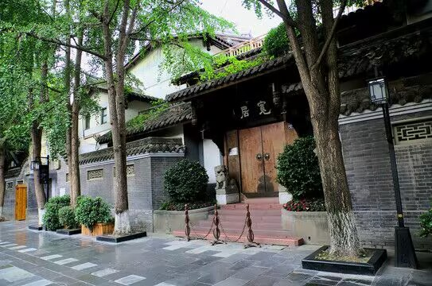
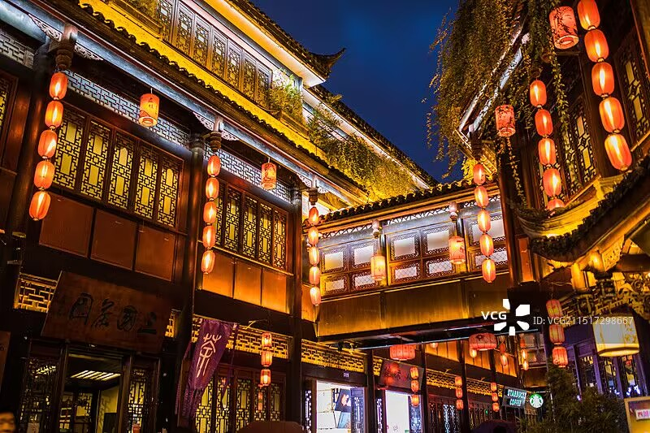
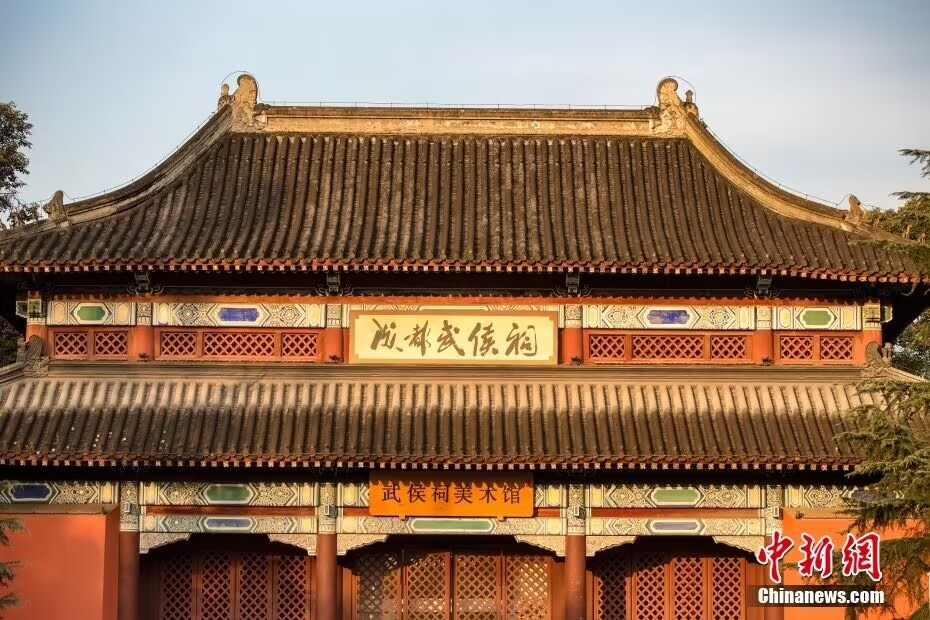
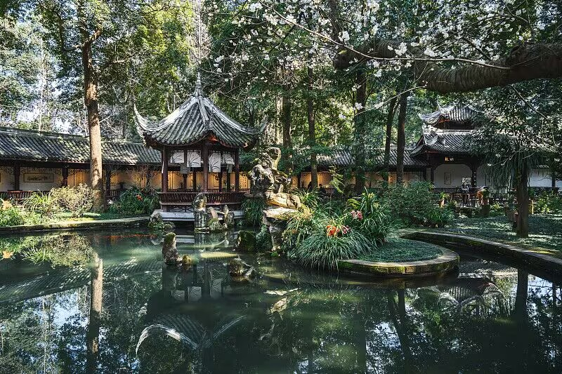

由宽巷子、窄巷子和井巷子三条平行排列的老式街道组成，是成都最具代表性的历史文化街区。青石板、川西民居、茶馆、小吃……处处都是老成都的味道。

传说中蜀汉丞相诸葛亮的"锦官城"所在地，如今是成都最热闹的仿古商业街。红灯笼、川剧脸谱、三大炮、糖油粑粑，夜晚灯火璀璨尤值得一逛。

中国唯一一座君臣合祀祠庙，纪念刘备与诸葛亮。红墙竹影、碑刻楹联，漫步其中仿佛穿越回烽火连天的三国时代。

唐代诗人杜甫流寓成都时的故居，"安得广厦千万间"便诞生于此。园内花木扶疏，茅屋重现，是中国文学史上的一块圣地。
成都最繁华的商业街，百年老字号与国际大牌齐聚。IFS楼顶的爬墙大熊猫是网红打卡点，旁边的太古里则是慢节奏的文艺街区。